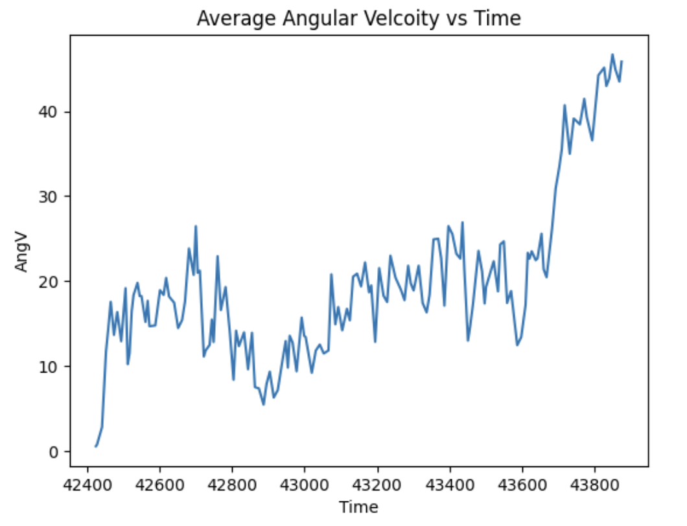
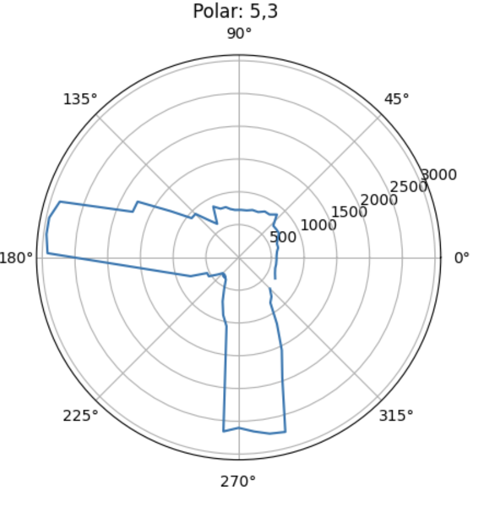
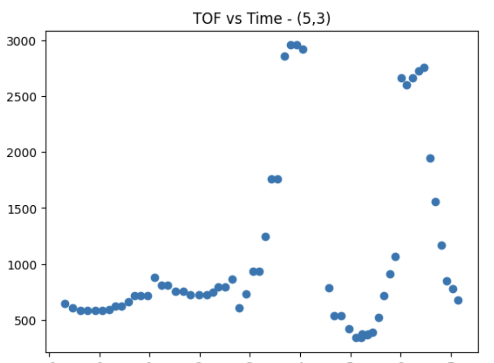
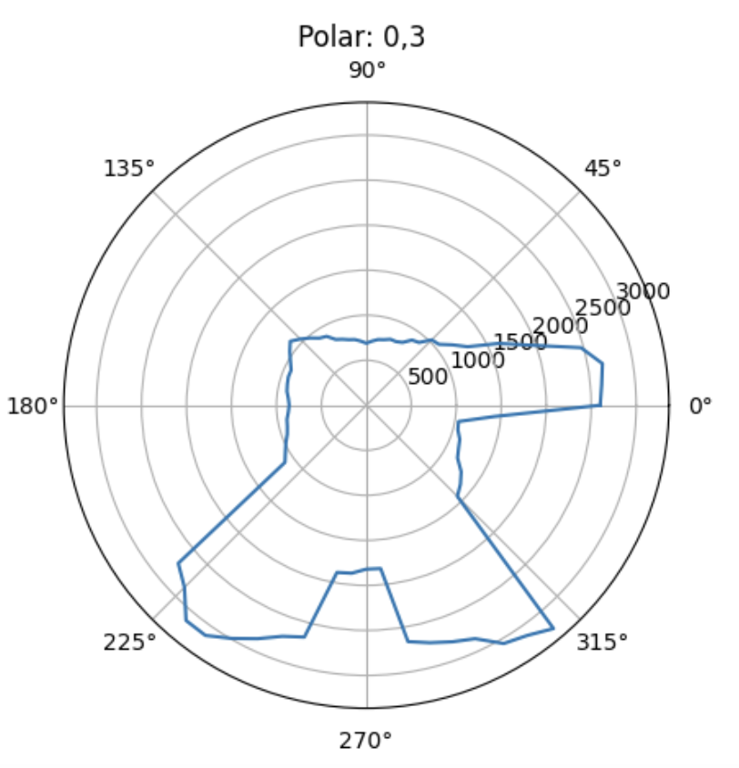
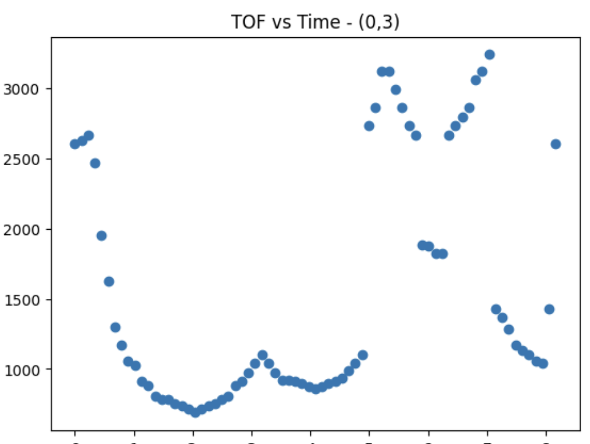
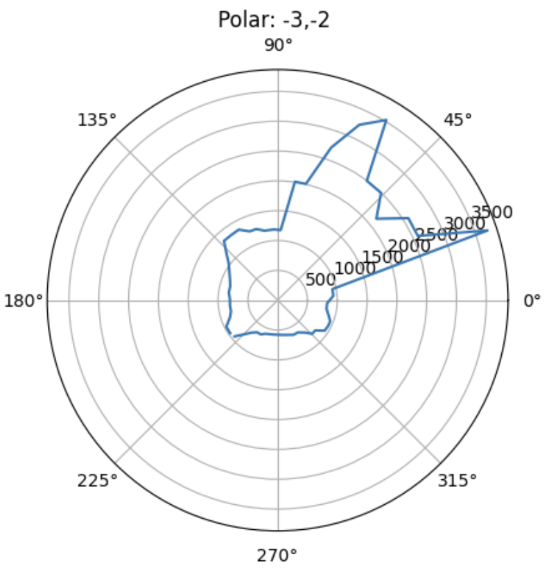
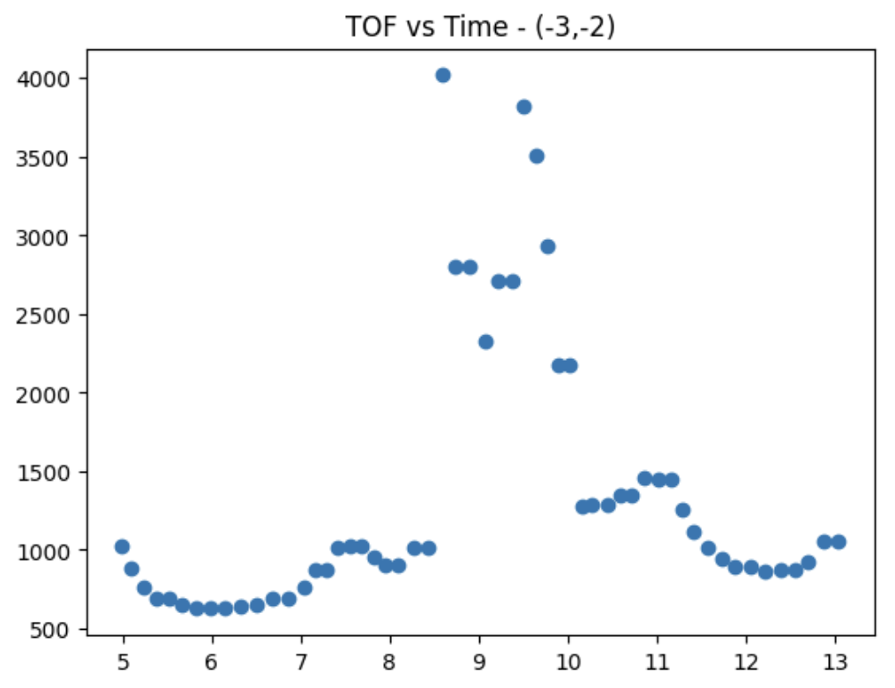
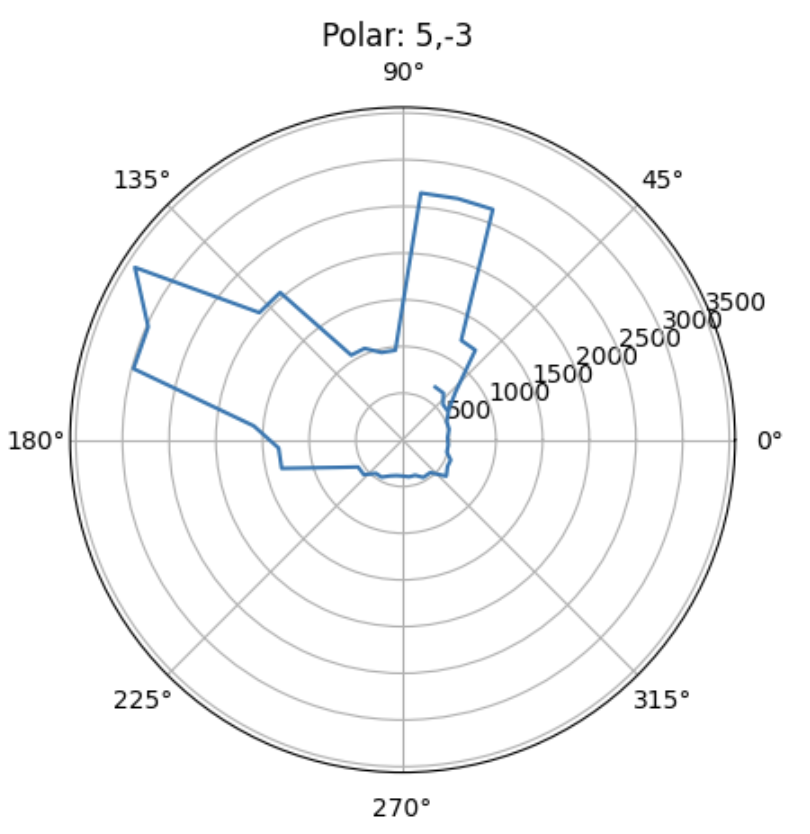
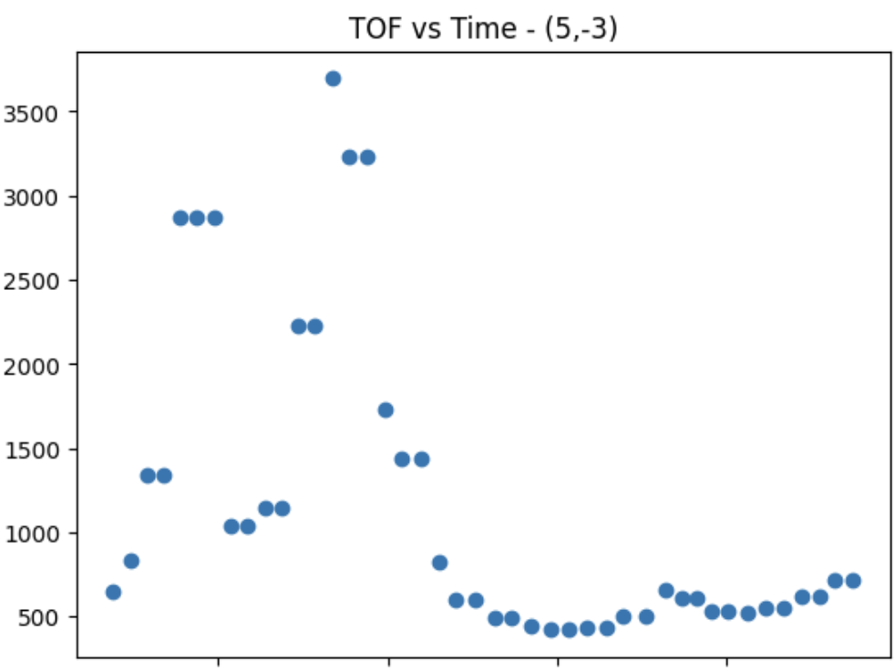

Lab 12PATH PLANNING AND EXECUTION
The purpose of this lab is to use the TOF + IMU sensors on my robot to map out a room. This is done by taking various distance measurements from different locations around the room. At each location specified by the lab instructions, I used PID control on angular speed to spin in a slow circle and sample data accordingly. After calculating that, I used transformation matrices to combine all these measurements and eventually build an accurate map of the room.
Designing Control
I chose to implement my control system using a PID angular speed control. This uses the raw gyroscope data that I recorded while spinning the robot at a constant angular velocity around the z axis. I definitely wanted to use closed loop control because it results in more accurate data and because of the increased control it provides me instead of having to deal with the environment factors. In implementing this, I tried to spin my robot every 20ish degrees and record data accordingly.
I first wanted to recalculate the best PID gain. I started out using the 0.05 as my Kp value because I wanted to have my robot rotate at a constant speed. The performance was kinda all over the place at first because of the battery power. I didn;t want to add an integral term because of the windup that it would give and the fluctuation that would happen as a result. I tried adding D but it wasn't consistent enough to justify incorporating it.
I first wanted to recalculate the best PID gain. I started out using the 0.05 as my Kp value because I wanted to have my robot rotate at a constant speed. The performance was kinda all over the place at first because of the battery power. I didn't want to add an integral term because of the windup that it would give and the fluctuation that would happen as a result. I tried adding D but it wasn't consistent enough to justify incorporating it. From plotting the angular velocity, it's a little noisy, but you can see that it rotates around 20 degrees on average. Because it was pretty noisy, I added a lowpass filter later on to improve the accuracy of my readings. I used open loop control to figure out the min speed that I was able to spin the robot at, which was around 90. For every spin, I obtained around 150 data points, around 15 data points every second.
This is my code that I used for the PID control and the case. I sent all the data after it was done to make sure that the sending did not change the execution time of my program. Finding the values was difficult because every run was different because of the floor, the battery level, and the exact position I placed the robot at. Also, if I were to spin in the middle of a 4x4 room, I think that I could expect pretty good accuracy because the robot's speed is pretty consistent.

@ VARIOUS DISTANCES
After creating this amazing perfect super accurate controller :), I then placed it across the 4 different distances across the lab. The associated polar plots and TOF vs Time plots are shown for each point.
Plot for (5,3)


Plot for (0,3)


Plot for (-3,-2)


Plot for (5,-3)


MAKE OVERALL MAP
Now, I computed the transformation matrices and converted the measurements from the TOF sesnor to a frame of reference of the room. I scaled up the readings of the robot to reference the room. This is the function that was used - inspired from ryan - .
Looking at these readings, my readings were kinda really bad and not as clear as I would have wanted. I tried to do some more post processing but it honestly just made it worse. Looking back, I wish I spent more time getting the same angular readings - because of the uncertainty of the floor and orientaion and battery - I used different degree turns which led to a lot of mismatches with my measurements. Since the angles did not correspond to the same tof measurements for each of the 4 measurements, the map was not as precise as I would have wanted. I also tried using a time scale instead which kinda worked better - to get it to turn for a specific amount. Using this helped a little but not tooo much because I can't guarantee that the robot was rotating at a constant speed for all four main rotations because of my little adjustments. But after doing the averages for the relative distances based on the map + angular speeds, I am able to conclude that the robot was turning at a semi constant rate but I still would trust the orientation from the integrated gyroscope values more.
LINE BASED MAP
After looking at my awful merged map, I added the lines on the maps based off the scale of the room and what my TOF sensor outputted.
Conclusion + Acknowledgements
Comparing my map to the full room, I think I did ~meh~ on